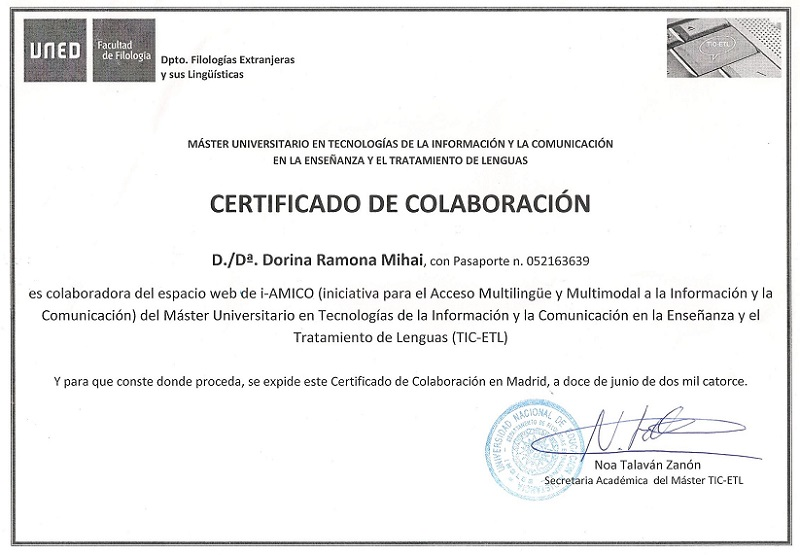
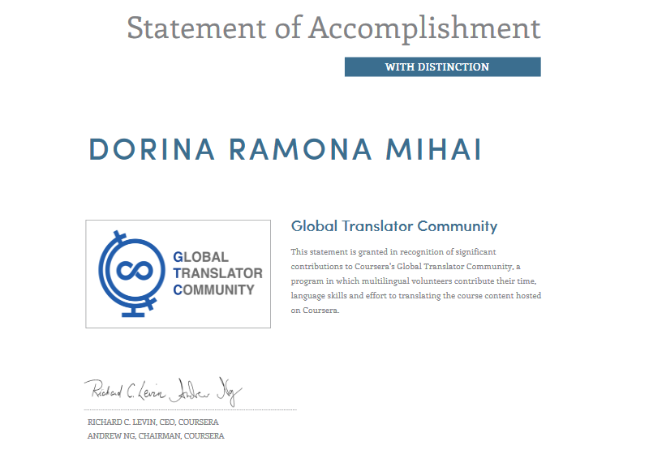
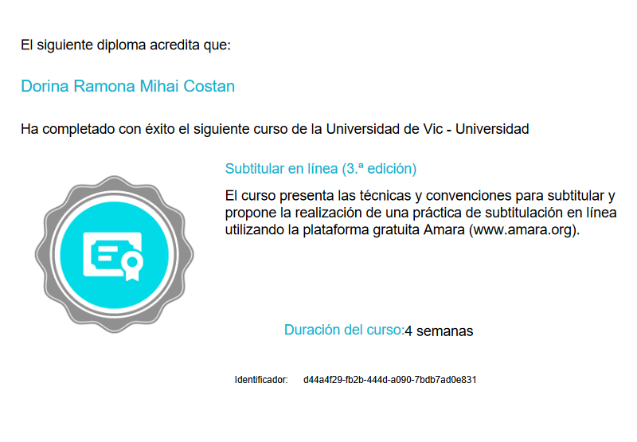

Lead Translator
Traducción de videos y textos de ingles a español. Proofreading por un nativo español para asegurar un trabajo sin errores.
Servicios de subtitulacion de videos en ingles, español y rumano. Utilizo Camtasia Video Editor para crear unos subtítulos estupendos.
Transcribe el audio de tu contenido digital tal como entrevistas, podcasts, webinars o videos en texto bien organizado.
Una traduccion puede mejorar el original, las representaciones contradictorias de la misma obra pueden ser igualmente válidas y el original puede ser infiel a la traduccion.
- por Jorge Luis Borges
Durante más de 40 años, millones de estadounidenses han recurrido a PBS NewsHour para obtener informes sólidos y fiables convirtiéndolo en uno de los programas más confiables en televisión.
Stanford eCorner cree en la poderosa combinación de evidencia e imaginación creando contenido que ayude a los emprendedores a dar vida a sus ideas.
Scientific American es una fuente autorizada galardonada de los descubrimientos científicos y las innovaciones tecnológicas más importantes. Scientific American publica ediciones en 14 idiomas.
Liderando la innovación en el deporte del póquer desde 2002, WPT se ha transmitido a nivel mundial en más de 150 países y actualmente está produciendo su temporada 16, que se transmite en FSN en Estados Unidos.
PokerStrategy.com ha enseñado a los jugadores de poker cómo ganar desde hace más de 8 años. Soporte en 14 idiomas. Para junio de 2015, era la comunidad de poker más grande con 7 millones de miembros.
WPT está presente en torneos en vivo, televisión y torneos online. Liderando la innovación en el deporte del poker desde el 2002, WPT incendió el boom global del poker creando un programa de televisión de high stakes.
Empece a traducir, subtitular y hacer audio descripción en el 2014 en dos proyectos llevados a cabo en la UNED, mientras estudiaba un Grado Universitario en Turismo en España.
Desde entonces he colaborado en varios proyectos:
Por la parte tecnica del poker he traducido autores tan importantes como:



Con estudios en diferentes campos, como Full Stack Web Development, Turismo, Comercio y Business, mis áreas de interés son: educación, business, viajes, tecnología, poker y apuestas. Estoy certificada por la UNED dentro del proyecto I-AMICO: Initiative for Multilingual and Multimodal Information Access and Communication – Traduccion y subtitulacion de Ingles a Español, Universidad de VIC y Coursera.
Ver la presentación oficial en video a continuacion
Utilizo el Camtasia Video Editor and Video Editing Software entre otras herramientas, dependiendo de las características del proyecto. Tambien puedo utilizar Amara Editor y la plataforma Transifex.